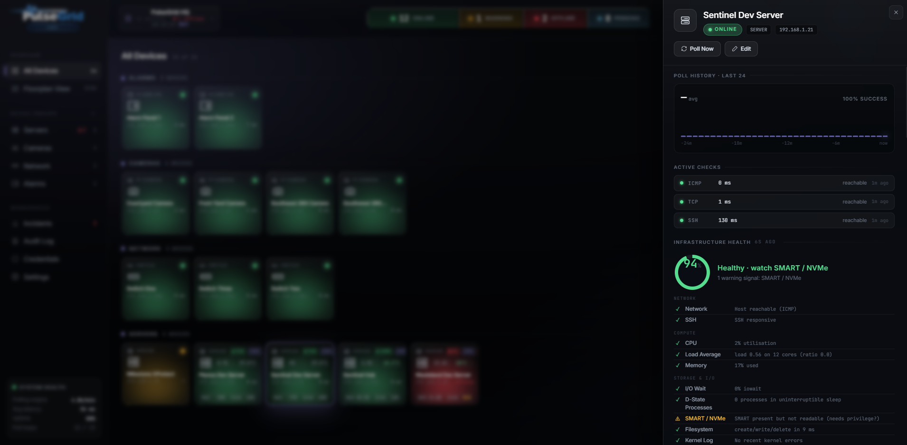
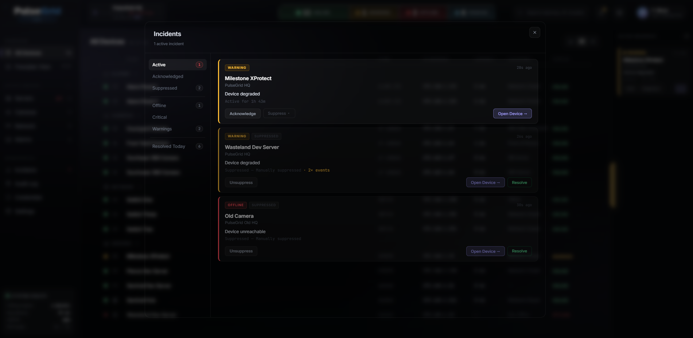
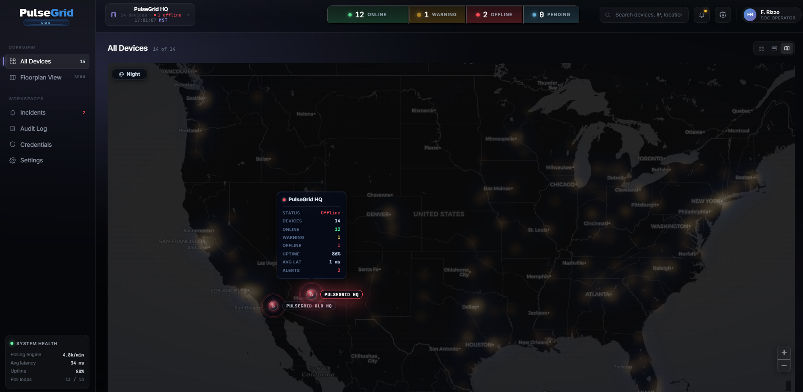

PulseGrid continuously monitors the health of your physical security ecosystem — from cameras and recording servers to storage, switches, UPS systems and environmental conditions — giving you real-time visibility before small issues become major outages.

Storage fills. SSD health declines. Temperatures climb. UPS batteries age. Switches run out of PoE budget. Recording servers quietly run short on resources. None of it trips an alarm — until the night you need footage and it isn't there.
PulseGrid watches all of it, continuously. Watchtower watches the video; PulseGrid watches everything behind the video — the hardware, storage, network and environment your security depends on.
Instead of watching video, PulseGrid watches everything the video depends on — so you catch trouble before darkness, not after.
Not generic IT monitoring — PulseGrid understands the devices a security operation actually runs on, and watches each one for the failures that matter.
Camera connectivity, availability and operational state across the whole fleet — surfaced the moment a device drops.
PlannedFirmware telemetry · sensor temperature · onboard storage health
The machines Watchtower runs on, watched end to end — from load to recording pipeline health.
Drive-level truth for the vault your footage lives in — before a disk takes the retention with it.
The switches and links every device depends on, on an SNMP monitoring foundation — with expanded switch, PoE, interface and vendor-specific telemetry planned.
PlannedExpanded switch, interface & vendor-specific SNMP telemetry
The room itself — an environmental monitoring architecture for temperature, humidity, power and UPS conditions, because heat and power loss take down hardware every other check calls healthy.
PlannedExpanded direct-sensor integrations
Monitor one location — or hundreds — through a single unified interface, with every site's health at a glance.
PulseGrid continuously evaluates health telemetry and surfaces developing problems — a wearing SSD, a climbing drive temperature, a service starting to slip — before they become outages, while there's still time to act.

Overall health scores summarize the wider device condition while critical findings remain independently visible and actionable.
PulseGrid doesn't just display statistics. It groups related signals into actionable incidents — acknowledge, suppress, resolve — so an operator always knows what actually needs attention.

See your whole footprint on one live map — sites pulsing with their real health, devices reachable directly from the point they sit on.

Each site carries its own status, uptime and open alerts.
Markers pulse with live state — calm when healthy, urgent when not.
Online, warning and offline, rolled up per location.
Jump straight from the map into any device.
PulseGrid is being designed to run on your own network — no mandatory cloud dependency, no forced subscription — keeping the operational telemetry that describes your security posture under your control.
A look at what's planned. These are directions we're building toward — not features shipping today.
Deeper per-camera signals — firmware, sensor temperature and on-board storage.
Richer switch, router and UPS telemetry through expanded SNMP support.
Direct integration with temperature, humidity and power sensors in the rack.
Trend-based forecasting to estimate time-to-failure from developing signals.
Scheduled health and uptime reporting for stakeholders and compliance.
Larger fleets and richer cross-site rollups through one console.
PulseGrid doesn't compete with Watchtower — it completes it. Each product owns one layer of the same security operation.
Live monitoring, recording, playback and investigations — the flagship VMS.
See it →The health of the hardware, storage, network and environment behind the video.
You are here SentinelHome Security Control
SentinelHome Security ControlModern, local control of the alarm system on the wiring and sensors you already own.
Protect it →Watchtower manages the video. PulseGrid monitors the infrastructure. Sentinel modernizes and controls the home security system. Together, they form the Zoneary ecosystem — local-first, owned, not rented.
PulseGrid is in active development. Request early access and we'll bring you in as it rolls out to the Zoneary ecosystem.